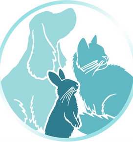
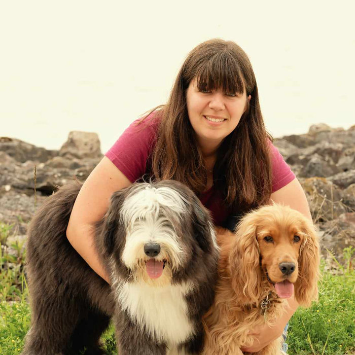
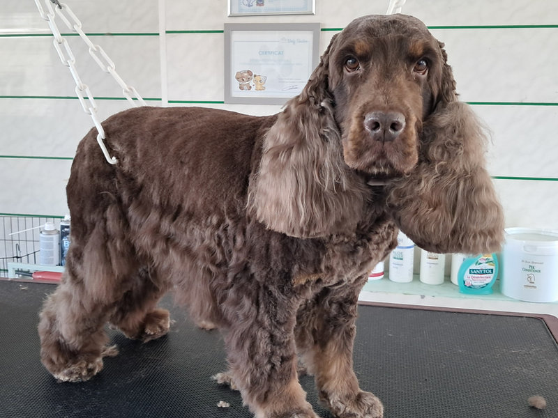
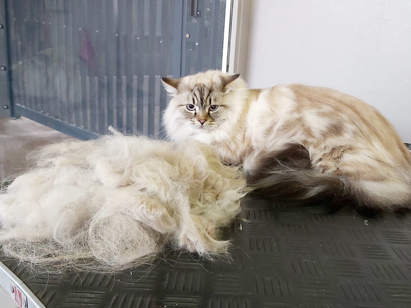
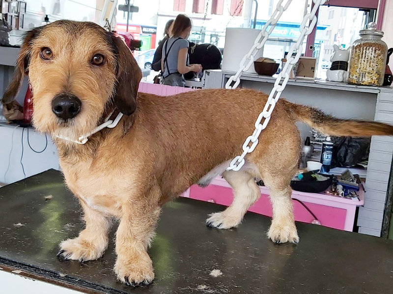
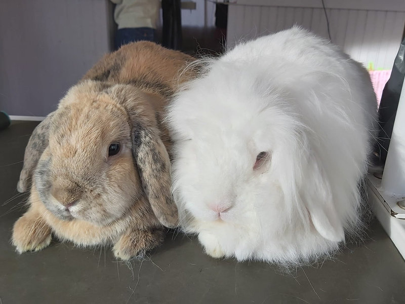
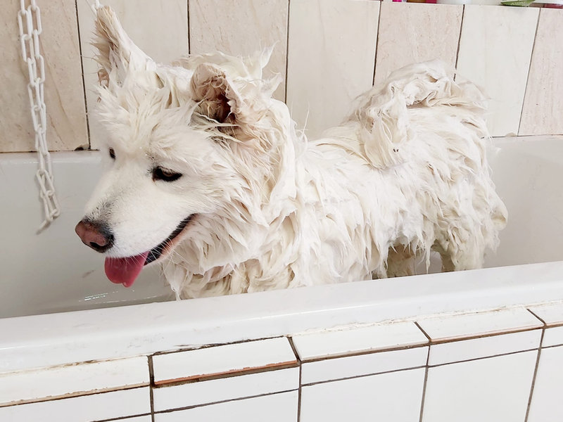
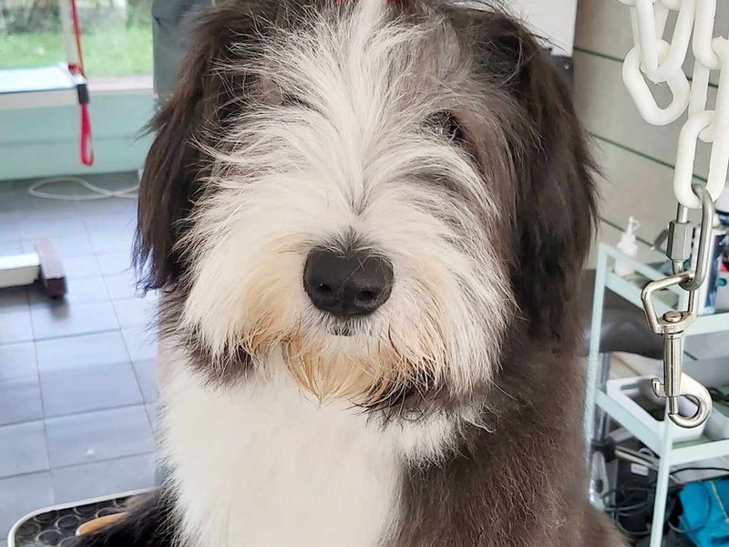
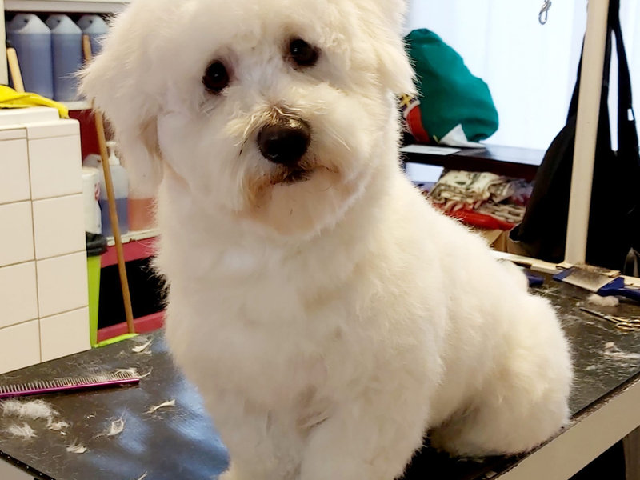

Atout'PoilsVotre animal est unique, et ses besoins le sont tout autant. Anaïs Ricordeau vous accueille à Bréviandes, près de Troyes, pour un toilettage sur-mesure, avec des produits de qualité et des techniques douces.
Tout ce dont il a besoin.
Bain, séchage, brossage, coupe des griffes, nettoyage des yeux et des oreilles. Des produits adaptés au type de poils de votre animal et à ses particularités (poil abîmé, terne, problèmes dermatologiques…).
Sous-poil abondant, nœuds que vous ne pouvez plus enlever ? Aucun nœud n'est indémêlable ! Je prends le temps de les démêler et de retirer le sous-poil, puis je vous conseille pour l'entretien de sa fourrure.
À la tondeuse ou aux ciseaux, dans le respect de la nature du poil de votre animal et selon vos envies, vos besoins et votre mode de vie. Passez me voir pour définir ensemble la coupe la mieux adaptée.
Pour les chiens à poils durs (cairn, griffon, teckel, westie…) et les cockers : une coupe plus courte et plus nette, sans couper ni dénaturer le poil. Et ce n'est pas douloureux.
Comprise dans toutes les prestations. Pour un entretien plus fréquent, passez dans la journée ou sur rendez-vous : cela évite la déformation des articulations chez le chien et les griffures sur vos meubles chez le chat.
Forte de mes trois années d'expérience en toilettage et de ma passion pour le comportement animal, je m'adapte à votre animal et à vos attentes, pour une coupe aux ciseaux, une tonte, une épilation ou simplement un bain. Mon objectif ? Que chaque séance soit une expérience positive pour lui et pour vous, afin que vous repartiez chacun avec un sourire aux babines !
La note donnée par 45 clients sur la fiche Google d'Atout'Poils.
En toilettage, avec une passion pour le comportement animal.
Chiens, chats, lapins : des soins adaptés à chaque type de poil.
4,9/5 sur 45 avis Google. Quelques avis publiés sur notre fiche Google.
« J'ai confié mon chien et je suis vraiment ravie du résultat ! La personne est douce, patiente et très professionnelle. Mon chien est ressorti magnifique, propre et détendu. On sent qu'elle aime les animaux et qu'elle prend le temps de s'en occuper avec beaucoup de bienveillance. Je recommande les yeux fermés, merci encore pour ce super travail ! »
Laurine G · avis Google · juillet 2026« Parfait ! Mon setter anglais a été traité comme un chef, tout beau tout propre et surtout tout doux, je recommande très fortement. On ressent tout de suite que la toiletteuse Anaïs aime ce qu'elle fait et qu'elle le fait à la perfection, merci à elle 🫶🏻 »
s0_lenn · avis Google · juin 2026« Je recommande Anaïs.
Personne très douce et professionnelle.
Ma choupette (Chatte poil long) avait le poil très emmêlé.
Anaïs lui a fait une toilette nickel plus de noeuds.👍
Je reprendrai un rendez-vous avec Anaïs dès que ma choupette aura son poil emmêlé. »
« Nous avons fait toiletter notre golden retriever (Tokyo) il y a 2 semaines et nous sommes ravis de la prestation faite par Anaïs. Tokyo est revenue toute propre, le poil bien coupé et démêlé. C'était la première fois qu'elle allait au toilettage et tout s'est bien passé grâce à la gentillesse d'Anaïs. »
Marie-christine Asselin · avis Google · février 2026« Super moment pour notre petit persan Sun… Anaïs est très douce et très professionnelle… Je recommande vivement ; nous reviendrons avec notre petit Sun 2 fois par an comme convenu. Merci encore 👍😻 »
Grégory CIAN · avis Google · décembre 2025







66 rue Jean Rostand, 10450 Bréviandes (agglomération de Troyes). Sur rendez-vous, du lundi au samedi de 8 h à 19 h.
Horaires : Du lundi au samedi, 8 h - 19 h, sur rendez-vous
Indiquez votre animal et la prestation souhaitée : Anaïs vous rappelle pour fixer le rendez-vous.